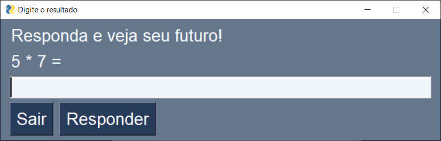
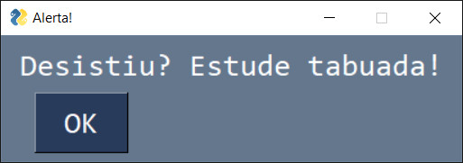

Avaliação para nota
DS3B - Programação De Aplicativos Mobile II
A atividade a ser entregue é baseada na aula do dia 24/11/2023 que abordou a atualização do texto de uma janela.
Utilizando PySimpleGUI, desenvolva um programa que ao ser executado mostra a seguinte tela inicial:
Se o usuário responder corretamente, exibe o popup abaixo:

No caso de uma resposta errada, o sistema mostra o popup com a seguinte mensagem:

Por fim, ao clicar no "X" (ícone que encerra o programa), o seguinte popup deve surgir:
Quanto mais itens cumpridos, maior a pontuação.
Como obter mais pontos:
- Acrescentar recursos como mudança de fonte, de tamanho da fonte, da caixa de diálogo etc
- A criatividade é relevante.
Atenção! A entrega deve ser um arquivo de text simples (não será aceito Word). Desenvolva o programa, copie o código do Visual Code, cole no "Bloco de Notas" (ou Notepad++) e salve o arquivo com nome da dupla.
Exemplo: a dupla foi feita por Raquel Pereira e Tiago Vasconcelos. O nome do arquivo é "Raquel Tiago.txt"
Prazo para entrega: 05/12/2023. Não há negociação de prorrogar a data.
Como perder pontos:
- Caso trabalhos idênticos sejam identificados, todos os alunos receberão nota 0 (zero).
- Não entregar no formato especificado.
- Descumprir com o nome do arquivo.
Professor Murilo Fujita